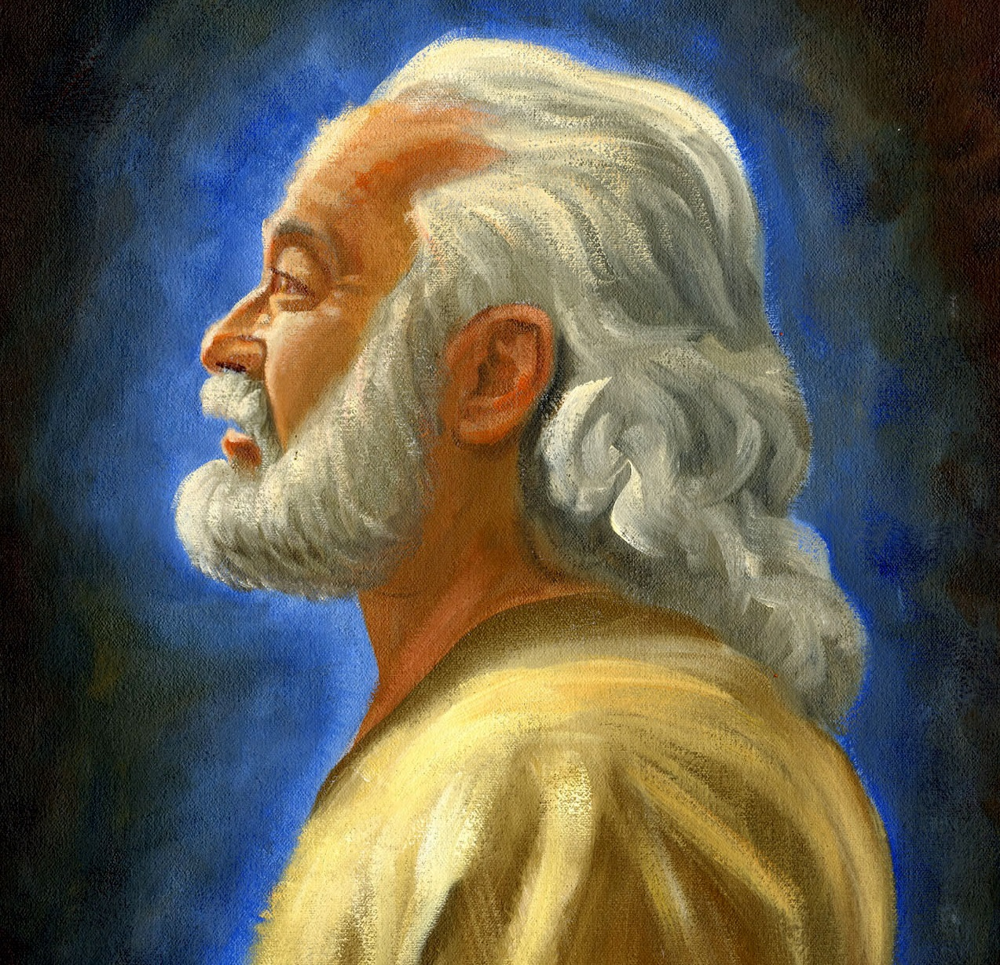

Brief biography
Circa 200 B.C.-148 B.C.

Abinadi was a prophet who preached about the coming of Christ to King Noah and his people, and was put to death for it (Mosiah 11-17). He taught that redemption from sin and death comes through the suffering, death, and resurrection of Jesus Christ, the Son of God. Abinadi’s teachings were recorded by Alma I, who had been a priest of King Noah, but was converted by Abinadi’s testimony (Mosiah 17:4).
Total recorded words -- 2,714
Insights into words and phrases
Redemption is an important theme in Abinadi’s teaching. He uses variants of
the word "redeem" more than any other Book of Mormon speaker. These include
"redeem" (Mosiah 13:33; 15:1, 11-12, 27), "redeemeth" (Mosiah 15:26; 16:2),
"redemption" (Mosiah 13:32; 15:19; 16:5-6, 15), and speaks of those who are
"redeemed" (Mosiah 15:9, 18, 23-24, 27, 30; 16:4).
The phrase
"the bands of death" is statistically significant for Abinadi. He is 70.8%
more likely to use the term than any other Book of Mormon speaker. It is
possible that some of Abinadi’s resurrection teaching draws upon Isaiah’s
reference to Zion, being told to "arise" from the dust, having her "bands"
removed, and being clothed in glorious apparel (Isaiah 52:1-2). He uses the
phrase, "I say unto you" eight times more than every other Book of Mormon
speaker combined.
Words uniquely used by Abinadi include
"beguile" (1), "cuts" (1), "disowned" (1), "endlessly" (1), "gnash" (1),
"persists" (1), "goes" (1), "pretend" (1), "works whether they be good or
whether they be evil" (1), and "he that persists in his own carnal nature,
and goes on in the ways of sin" (1).
Abinadi uses the titles
"Eternal Father" (Mosiah 16:15) and "Eternal Father of heaven and earth"
(Mosiah 15:4), as do several other Book of Mormon prophets; but his
reference to Christ as "the very Eternal Father" (Mosiah 15:4)
is unique.
Abinadi is also the only Book of Mormon speaker to
use the title, "Founder of Peace" (Mosiah 15:18). It is interesting to
consider the possibility that the title might be a wordplay upon the name
Jerusalem, which appears in the passage Noah’s priests ask Abinadi to
interpret (Isaiah 52:9; Mosiah 12:23). While there is uncertainty among
scholars as to the precise meaning of the name, some have interpreted it to
mean something like "foundation of peace." 1
Personal application
Abinadi’s teaching that Christ is the founder of peace is significant. It highlights how our Redeemer is the only foundation upon which lasting peace can be built. As you read the words of Abinadi, you might ponder his message and testimony of Christ, and how Christ’s saving work and the blessing of repentance can bring greater peace and happiness to your life.
1 F. Brown, S. Driver, and C. Briggs, eds., The Brown-Driver-Briggs English Lexicon (Boston: Houghton, Mifflin and Company: 1906), 436.
Chronology
All dates are approximate.
150 B.C. Abinadi preaches to King Noah’s people. He prophesies that
unless they repent, they will be brought into bondage. They reject his
message and seek to kill him.
148 B.C. Abinadi preaches again to King Noah and his people. He
prophesies that the people will be smitten and afflicted for their sins, and
destroyed if they do not repent. He is taken, imprisoned, and brought before
King Noah and his priests. He preaches concerning the coming of Christ, his
suffering, death, resurrection from the dead, and the necessity of
repentance from sin. Abinadi is offered his life, if he will recall what he
has prophesied. He refuses and is put to death.